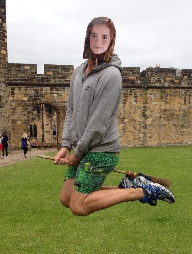

Name: Tom Barber
Student Number: 3872290
Email: s3872290@student.rmit.edu.au
Nationality: Australian
Education: Master’s Degree in International Security and Bachelor’s Degree in Politics and International Relations
Languages: Bahasa Indonesia (elementary proficiency)
Hobby: Fantasy Football (AFL Supercoach)

What is your interest in IT? When did your interest in IT start? Was there a particular event or person that sparked your interest? Outline your IT experience (if any):
My interest in IT is not so much any passion for IT per se, but more an appreciation of the career pathways that it can open up for me. I have degrees and work experience in a different field (International Relations), but for reasons of industry competitiveness I have been unable to secure a full-time job. COVID-19 has not helped in that regard either, particularly because the jobs I did have were casual and at universities – a sector which will be adversely affected for a number of years as I am sure you would appreciate. But this has also afforded me the opportunity to re-evaluate my career path, and, having a long-held fascination with maps and geography, I have decided to study a Master’s of Geospatial Science in 2021 (this will also complement the knowledge and skillset I already have). In that context, RMIT’s six-month certificate in IT stood out as a great way for me to get familiar with many of the concepts that I will need to grasp moving forward particularly as my IT experience is quite limited.
Why did you choose to come to RMIT?
One of my good friends studied a Master of Data Science at RMIT, and he spoke highly of the practical and industry-focused aspects of his course. I know that the Master of Geospatial Sciences takes a similar approach in that regard, which is quite appealing. Likewise, the long history of geospatial science at RMIT means that not only is there a wealth of broad experience to draw upon from the academics, but also the opportunity to tap into industry connections throughout the course of my studies. When on-campus learning recommences, RMIT’s location is also a drawcard, as I live relatively close by. But the main reasons that I chose RMIT relate to its reputation as an industry-focused institution where students graduate job-ready.
What do you expect to learn during your studies?
I expect that the undergraduate certificate in IT will give me a broad, foundational knowledge platform on which my later studies will build upon in a more focused way. I would not be so naïve to think that I will be an IT expert after six months, but from prior studies I know that what I learn will nevertheless be invaluable. My prior tertiary education experiences were quite different in terms of learning methods and assessment, being in the Social Sciences, so I am excited to learn in new ways.
Geographic Information Systems (GIS) Risk Analyst Consultant
(Note: It was tricky to find my absolute ideal job, which I think probably has a lot to do with COVID-19 and a lack of job advertisements, but also probably that what I have in mind – a geopolitical risk GIS analyst – is rather specific. In any case, the position I did find requires many of the same skills, knowledge and experience, so it will suffice for the purposes of assignment 1).
Position description and what makes it appealing to you:
The position sits within the Emergency Preparedness and Response Coordination Branch of the World Food Program (WFP), which, as the name suggests, is responsible for enhancing the anticipatory and response capacity of the WFP in times of crisis. The GIS Risk Analyst role primarily manages georeferenced data to analyse multivariate hazards and identify risks. The main reason that the position is being advertised is that the WFP wants to develop a Spatial Contextual Risk Analysis Model (SCRAM). This SCRAM will combine a number of data layers – such as population vulnerability and hazard exposure – in order to better model the probabilities of humanitarian crises, and to classify sub-national areas according to their level of exposure. It is anticipated that this will support WFP decision-making, improve emergency preparedness, and ultimately save lives.
The reason this job appeals to me is that it combines the knowledge that I already possess from my previous experience with the skillset I will acquire during my time at RMIT – namely, International Relations and Information Technology (or, more specifically, Geospatial Science). It has the added benefit of being an impactful role, insofar as it is humanitarian, which is important for me in a career satisfaction sense.
A description of the skills, qualifications and experience required for the position.
The role requires the following skills, experience and qualifications:
A description of the skills, qualifications and experience you currently have.
My tertiary qualifications and work experience are not so much relevant in a direct sense, but my understanding of International Relations more broadly, and geopolitics in particular, equip me with some useful background knowledge and conceptual awareness of the objectives and function of the World Food Program. Critical and analytical thinking, problem-solving, and effective communication are likewise all attributes that I have developed over the years, through both education and work experience, that would also be complementary to my application.
Aside from that, I do not yet possess any of the technical GIS skills or scientific experience specifically required by the role.
A plan describing how you will obtain the skills, qualifications and experience required for the position, building on those you have now. This need not be greatly detailed, (and will probably change significantly over time anyway), but try to be as specific as you can.
Obviously, completing the Undergraduate Certificate in Information Technology, and then a Master’s of Geospatial Science, will be the first step I take to acquire the technical know-how laid out in the advertisement. During my studies, I will also look to undertake some type of work experience or internship which will allow me to get a feel for how the things I learn are applied in a professional setting.
Regarding the specific software requirements (ERDAS, ENVI ArcGIS 10), those that are not taught at RMIT I will learn in my own time, either through at-home learning, or possibly through some type of short course. Ideally, I will be able to find an internship or placement that uses some or all of these programs.
Given the five-year experience requirement, I will have plenty of time to cumulatively build up the skillset needed from other roles. For example, I could get a job that is purely in GIS spatial analysis, then move into one that encompasses more risk analysis elements, then focus on spatial database management, etc. During this phase I would also ensure that I gained demonstrable experience working in an international scientific environment by, for example, attending conferences and building up my network.
Ultimately, each progressive step in my career should be made with my ideal job in mind, and tailored to how it can help me develop the skills to enable me to get the job. At the same time, I will be open-minded to career paths I had not considered.
Myers-Briggs test: Logician INTP-T
Learning style test: Visual Learner
Creativity test: Creativity score of 64
What do the results of these tests mean for you?
I have the Introverted, Intuitive, Thinking, and Prospecting personality traits, am a visual learner, and have a very typical level of creativity. My strengths include analytical thinking, open-mindedness and objectivity; whereas my weaknesses include absent-mindedness, insularity and second-guessing myself. Interestingly, my Myers-Briggs results – which suggest creativity and originality – somewhat clash with my creativity results, which are scored almost exactly the same as the average.
How do you think these results may influence your behaviour in a team?
I think I would need to focus on listening to other team members and valuing their input as equal to mine. This could include taking notes during or after conversations with them to help visualise their input. Equally, I would need to make sure that I voice my own thoughts clearly and confidently when appropriate. I should adequately prepare beforehand, and critique my own ideas, in order to ensure I speak with confidence and make a valuable contribution.
How should you take this into account when forming a team?
Maybe seek out someone who is more of an extrovert, who might be able to better get conversations started and keep them running along. In any case, I would seek to collaborate with others who have would appear to have different combinations of traits to myself, as I value the role that diversity can play. That said, I am pretty easy going and would be able to work professionally with anyone I am teamed up with.